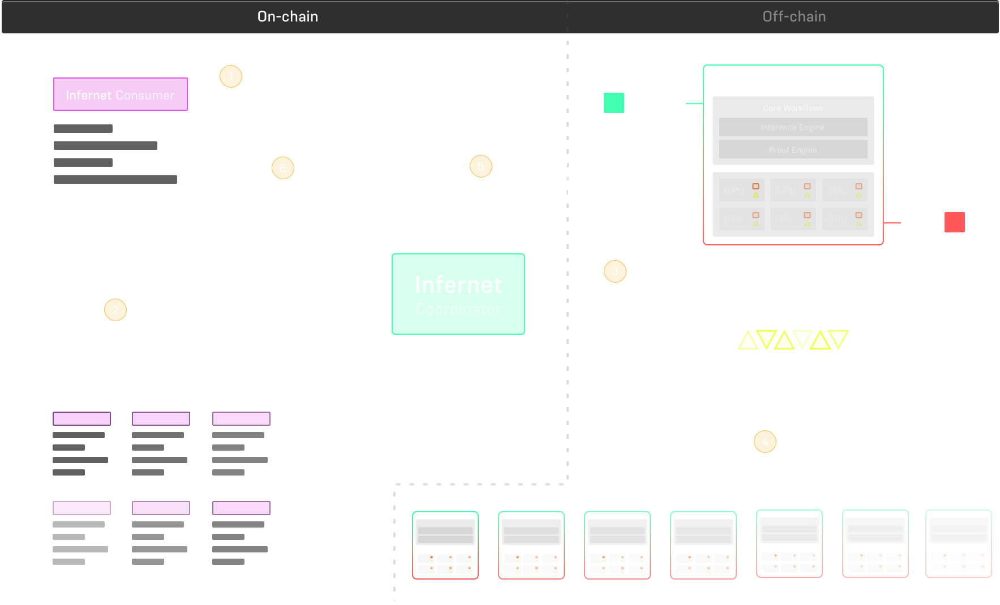

Ritual
Call Notes
- A lot of infrastructure, but need more AI applications in crypto
- They dont focus on training, do fine tuning and inference: quantization and distillation further down the line
Questions
Model reputation, ID consistency
How do the economics work in regards to
You mention the importance of privacy. At what level are you pursuing this? Can the user encrypt their query (FHE ML)? What guarantees do they have about their data?
- privacy of user and privacy of provider?
To what extent do you guys want to be involved in model development?
To what extent can I customize my model as a node-runner. The primary use case for LLM queries for example will be a user wants a response from Llama-2-70b, there are multiple node runners that can run that inference. However, can I as a node runner offer my custom nano-Llama-Grok model? Does it require me to publish my model on huggingface, register a template with Ritual?
How is training incentivized? It’s fair to assume users only want to pay for post-training inference, is it the future EV of inference fulfillments that incentivized training, or is Ritual more involved in training directly?
Nodes - model hosting - gpu compute - proof generator
Smaller models, < 100k params, regression, more applicable for ZK-proofs
Larger LLMs / diffusion, optimistic proofs EZKL has proof compilers, they create circuits
You can run MPC compute, keep each private, and
archetype took 15 out of the 25
about 1mm or so left
150mm post money equity 2:1 token warrant
one more fundraise before token launch
Resources
- Introductory Post: Introducing Ritual
- Documentation
- Installation
Tutorials
Notes
Intro Post
Goal Statement: Merge the best principles and techniques of cryptography and AI to create a system that enables open and permissionaless creation, distribution and improvement of AI models.
Context: We have recently seen a cambrian explosion in AI models, but we see a few core problems.
Lack of Strong Service Level Agreements (SLAs)
- existing platforms dont offer guarantees on computational integrity, privacy, and censorship resistance.
- permissioned and centralized APIs
- high compute cost and limited hardware resources
- oligopolistic and strcuturally misaligned: current landscape, either close source ur models, or open-source as a donation (no infra to reward their contributions)
Solution
Ritual is an open, modular, sovereign execution layer for AI. Consists of distributed network of nodes with access to compute and model creators, enabling creators to host models on these nodes. Users can then access any model on the network (single uniform API) and the network provides cryptographic guarantees around privacy, and integrity.
Infernet
Infernet is the first evolution of Ritual. It exposes interfaces for smart contracts to access AI model for inference. It’s the first building block in a suite of protocols and utilities to enable builders on Ritual and permissionless access to network of model and compute resources.

The grand vision is for Ritual to become schelling point of AI in web3 by tranforming Infernet into a modular suite of execution layers that interop with base layer infra, allowing every protocol and application on an chain to use Ritual as an AI coprocessor.

Team
- Niraj Pant: GP Polychain, Research Decentralized Systems Lab, CS @ UIUC
- Akilesh Potti: Partner @ Polychan, ML @ Palantir, Quant @ Goldman, ML Research @ MIT, Cornell
- Ricky Moezinia: Founder @ Alta, SE @ Libra, Quant @ Point 72, EECS @ MIT
- Anish Agnihotri: MEV, Research @ Paradigm, Trading @ Polychain, CS @ UWaterloo
Advisors
- Illia Polosukhin: Co-Founder NEAR and Co-Creator of Transformers (“Attention is all you need”)
- Sreeram Kannan: Founder Eigenlayer and Associate Prof of CS @ University of Washington
- Tarun Chitra: Founder/CEO Gauntlet and GP @ Robot Ventures
Product
Ritual Superchain: and AI coprocessor for all blockchains
- a state of sovereign modular execution layers, each containing specialized Stateful precompiles
- a GMP layer to facilitate interop between existing blockchains and Ritual superchain
- Ritual’s AI VM contains not only SPCs, but also base layer infra to facilitate optimized execution, including inference engine binaries and vector dabases
Infernet
Flow
- Smart contracts use interface to initiate requests including model ID, input features, etc.
- Infernet nodes listen for calls and collect models from storage
- Infernet computes inference and delivers output (alongside optional proofs)
- Coordinator delivers the response directly to the contract
SDK
The SDK closely resembles that of off-chain oracle systems (and cross chain messaging protocols)
Server Contracts
Coordinator.sol
Events
- SubscriptionCreated
- SubscriptionCancelled
- SubscriptionFulfilled
Functions
- createSubscription()
- cancelSubscription()
- getSubscriptionInterval()
- deliverModelOutput()
EIP712Coordinator.sol
Functions
- createSubscriptionDelegate()
- deliverModelOutputDelegate()
Functions
_receiveModelOutputrawReceiveModelOutput: Callable only by address(COORDINATOR)
Client/Developer Contracts
Developers may inherit two interfaces:
- Callback Consumer: one-time computation consumption
- SubscriptionConsumer: recurring computation consumption
both inherit the base consumer
BaseConsumer.sol
Handles receiving model output from coordinator.
Functions
- rawReceiveModelOutput(): public entrypoint, relays to
- same as below
- _receiveModelOutput()
- subscriptionId
- interval
- redundancy
- node
- response
- proof
CallbackConsumer.sol
Functions
- _requestModelOutput() returns uint32 ID
- containerId
- features
- maxGasPrice
- MaxGasLimit
- redundancy
SubscriptionConsumer.sol
Functions
- getModelFeatures()
- subscriptionId
- interval
- timestamp
- caller
- _createModelOutputSubscription() returns uint32 ID
- containerId
- maxGasPrice
- MaxGasLimit
- frequency
- period
- redundancy
- _cancelModelOutputSubscription()
- ID
Delegator.sol
Exposes a signer address allowing authorized EOA to sign off on actions on behalf of contract.
Allows developers to create Coordinator subscriptions off-chain, on behalf of a contract, by signing a DelegateSubscription from signer and submitting to EIP712Coordinator.createSubscriptionDelegatee()
Types
Subscription - owner: on-chain address (smart contract), which receives subscriptions and can cancel - containerId: unique identifier of compute container you want an Infernet node to run. Subscriptions’ features are passed into this container and output directly returned. - features: two ways to expose input data/features. Encode data in this parameter or leave empty and expose a getModelFeatures() function in consumer contract. - frequency: 1, 2, etc, or UINT256_MAX implying perpetual - period: in seconds, 0 if once - redundancy: how many unique nodes do I want a response from each time. - activeAt: start time - maxGasPrice: max price of response tx - maxGasLimit: contracts callback function gas _ DELIVERY_OVERHEAD_WEI (fixed surcharge)
Nodes
People can run nodes permissionlessly
Workflows
Two main workflows: training and inference
Uses MLFlow